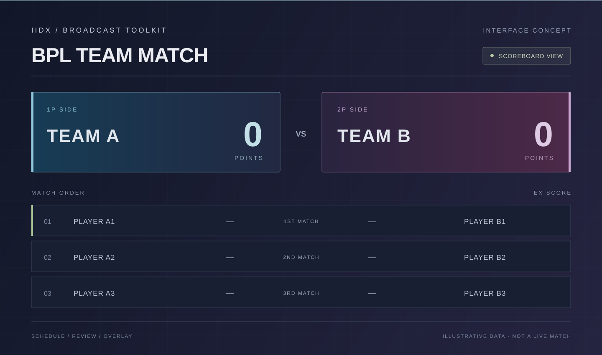

IIDX Stream
Manager
从赛程到比分，把比赛带上直播。
面向 beatmania IIDX 赛事的网页导播台。安排赛程与机台，手动抓取并复核成绩，再联动 OBS 场景和实时记分板。
- BPL 团队赛 / 个人淘汰赛
- 机台分配、成绩复核与记分板
- OBS 画面联动与串口音频切换

A PERSONAL WORKBENCH
从音游里的一个小需求，到桌面上的一块电路板。
这里放着我做的工具、改造，以及一路记下的心得。
01 / PROJECTS
从赛程到比分，把比赛带上直播。
面向 beatmania IIDX 赛事的网页导播台。安排赛程与机台，手动抓取并复核成绩，再联动 OBS 场景和实时记分板。

把选项效果，放在选项旁边。
enza 版《偶像大师 闪耀色彩》的汉化增强版。在游戏选项下方显示育成数值、亲爱度与心情效果，减少反复查阅攻略的操作。
基于 biuuu/ShinyColors，增加选项效果提示、角色匹配与自动发布。
查看项目下一首想挑战的谱面，抬腕就能找。
运行在 Pebble 手表上的 IIDX 随身助手。通过 FireNet 浏览订阅难度表、搜索歌曲与收藏，查看 SP / DP 玩家雷达和维度详情。
查看项目让一块旧屏幕，重新发光。
用 nRF52832 与 Zephyr 驱动 Sony VFD。通过 BLE 显示时钟与电脑状态，也能播放预置谱面动画、接收 Codex 通知，用敲击完成交互。
查看项目四路音源，一键切换。
基于 Raspberry Pi Pico 的四路音频输入切换器。支持 USB 串口切换、当前通道查询和实体按键，仓库包含固件、PCB、Gerber 与 UF2 文件。
查看项目02 / FIELD NOTES
say “Halo” 中文育成手册。按输出、Center、Leader、辅助与三色目标整理路线，说明 Advice 预算、属性门槛和成品检查，附原文来源。
BUILT OUT OF CURIOSITY.
有意思的事，
就动手试试看。